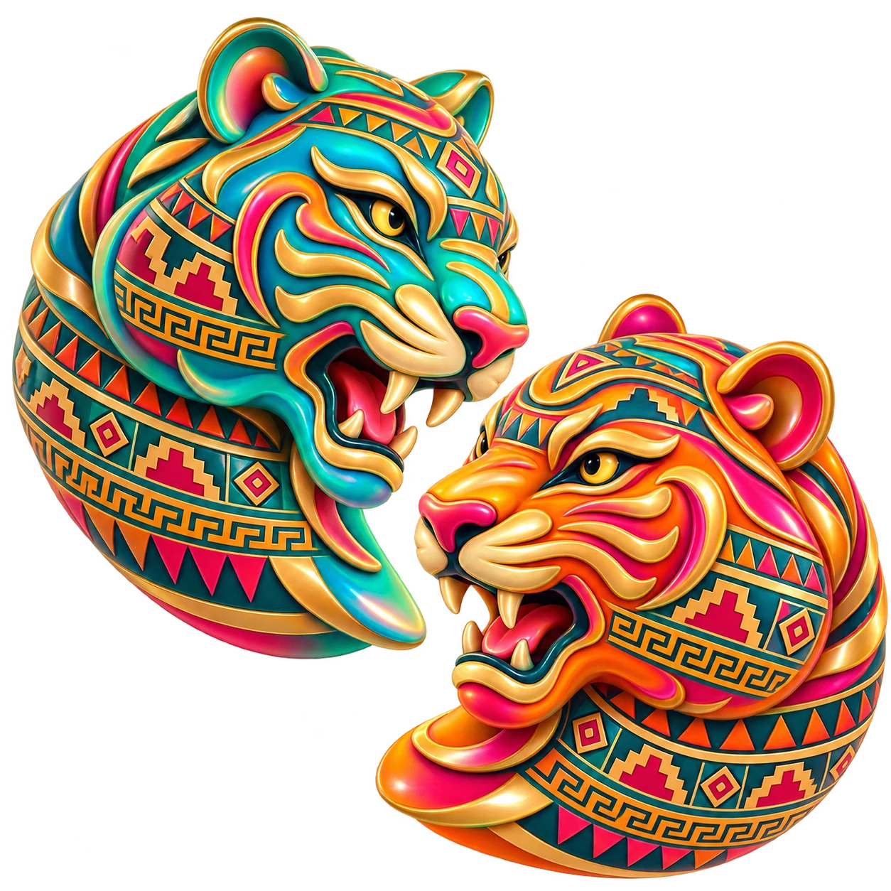
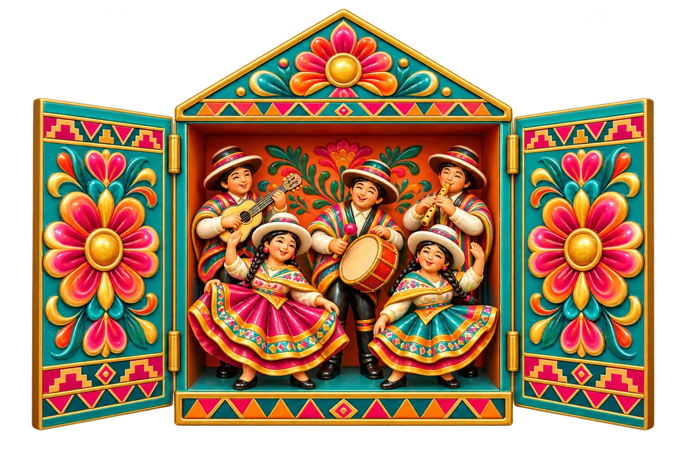
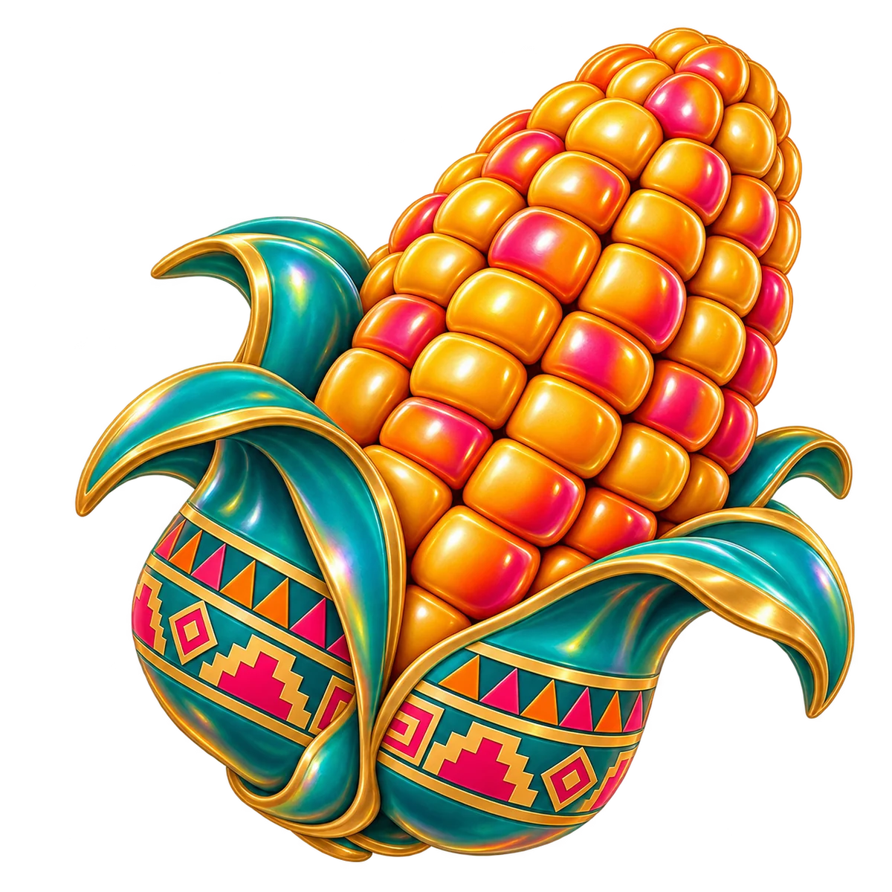
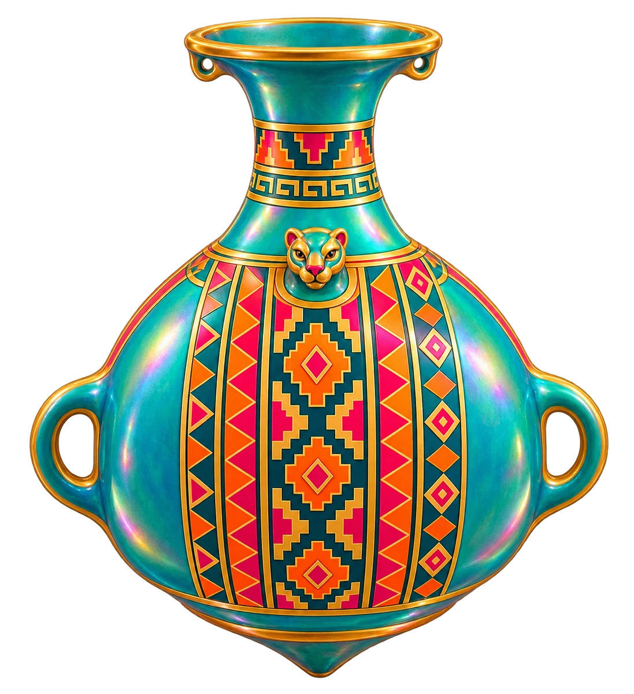
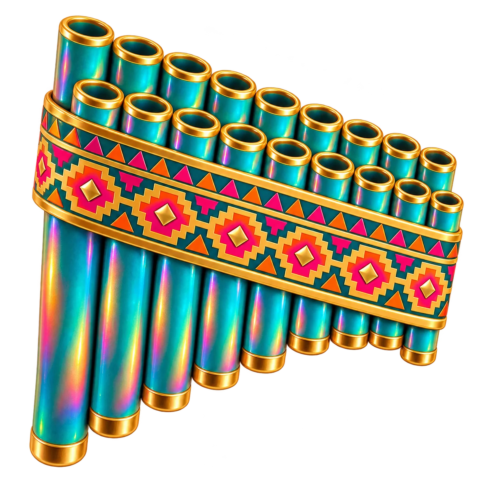
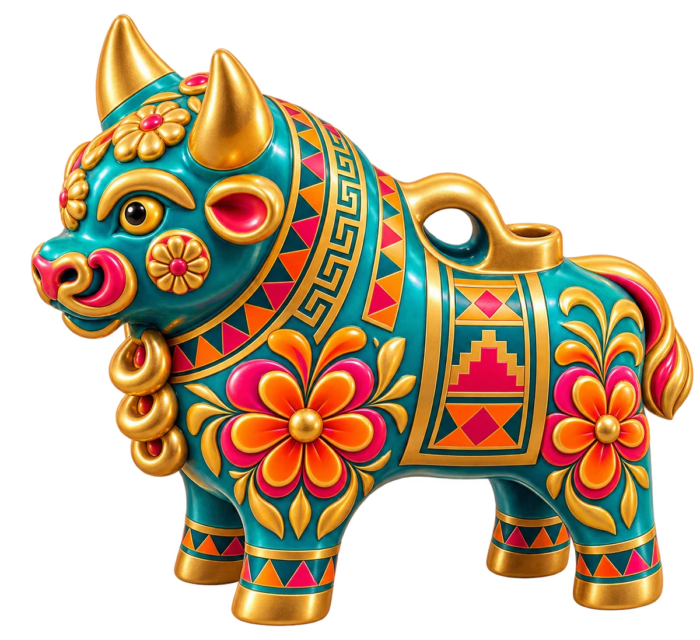
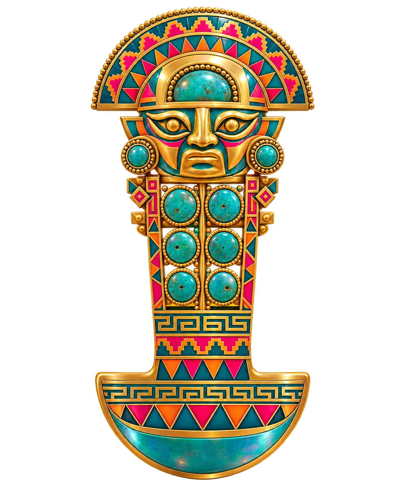

Noche DeTigre

Una celebración de la gastronomía y la cultura peruana
- Evento privado · Solo por invitación
- Yakumanka by Gastón Acurio
- Fecha por confirmar
La noche
Una noche para celebrar el Perú alrededor de la mesa.
Acme Distribuciones y Yakumanka by Gastón Acurio reúnen gastronomía, conversación y música en un encuentro privado dedicado al producto y la cultura peruana.
La pensamos como una mesa larga: llegar con el sonido del cajón, probar sin prisa, escuchar a quienes cocinan y cuentan el Perú, brindar con pisco y terminar bailando. Una celebración por invitación, con el sabor y el ruido de una fiesta de familia.

- 01 Gastronomía
- Choclo, ají amarillo, limón y pescado del día: el producto peruano en manos de la cocina de Yakumanka, con técnica y memoria. Estaciones abiertas para probar, repetir y preguntar por cada receta.
- 02 Conversación
- Como el aríbalo inca, la vasija que servía la chicha para compartir, la conversación pasa de mano en mano. Cocineros, creadores y amigos de la casa hablan del Perú que se come y se cuenta, sin escenario ni atril.
- 03 Música
- Del cajón afroperuano de la bienvenida a la cabina de la madrugada, la música marca cada momento. La zampoña, voz de los Andes, es su emblema: la noche empieza escuchando, sigue conversando y termina bailando.



Programa
Seis momentos para recorrer la noche de principio a fin. Cada uno tiene su pieza, su sonido y su sabor: el programa está pensado para vivirse entero, sin prisa y en buena compañía.
-
Bienvenida Afroperuana
La noche arranca al ritmo del cajón, el instrumento nacido en la costa afroperuana que hoy es Patrimonio Cultural de la Nación. Percusión en directo para cruzar la puerta, dejar la ciudad atrás y entrar en el Perú.
Mario Cubillas
-
Habla causa
«Habla, causa»: así se saludan los amigos en Lima. Una conversación sin guion sobre producto, identidad y todo lo que el Perú ha puesto en la mesa del mundo, con la cercanía de una charla de sobremesa.
Rocío Quillahuaman con Albert Adrià
-

Premio Mejor Ceviche 2027
El ceviche es el plato bandera del Perú: pescado del día, limón, ají y cebolla, sin nada que sobre. Esta noche presentamos el premio que saldrá a buscar el mejor ceviche de 2027.
-
Cóctel
La cocina sale de la cocina. Estaciones de Yakumanka repartidas por la sala, productos Acme y pisco para brindar: un recorrido para probar, picar y volver a por más mientras sigue la conversación.
Productos Acme y estaciones elaboradas por el restaurante
-
No más chamba
Se acabó el trabajo por hoy. Dos selectores se turnan los platos, B2B, con música para soltar la semana y llenar la pista hasta que nadie se acuerde de mirar el reloj.
Pierre Antoine B2B DJ Miqui Puig
-
Se armó el tono
En el Perú, cuando «se arma el tono», empieza la fiesta de verdad. Como el ají, la noche sube de temperatura al final: el último tramo es para bailar.
Jordi Stone
El lugar
Yakumanka by Gastón Acurio
Yakumanka —«olla de agua» en quechua— es la casa de Gastón Acurio en Barcelona dedicada a la cocina marinera peruana: cebiches, tiraditos y sabores de la costa con el espíritu de una picantería de barrio. Esa noche, la sala se convierte en una gran mesa compartida.
- Lugar
- Yakumanka by Gastón Acurio, Barcelona.
- Acceso
- Evento privado. Exclusivamente por invitación.
- Fecha
- Fecha por confirmar
- Dirección
- Horario
- Desde las 20:00, con la bienvenida afroperuana.


Te esperamos alrededor de la mesa.
Una noche para conocer el Perú por la boca y por el oído: producto, conversación y música en la casa de Gastón Acurio en Barcelona. El acceso es solo por invitación; la fecha y los detalles se confirmarán en esta misma página.
El tumi, cuchillo ceremonial de la cultura Lambayeque, es hoy un símbolo peruano de buena fortuna. Lo dejamos aquí, al final, como despedida y como augurio.
Patrocinan
Gracias a quienes hacen posible la noche.
- Acme Distribuciones
- Estrella Damm
- Consulado General del Perú en Barcelona
- Pisco Portón